A second direction on the same eight formats: the original leads with warm human moments; this one leads with operational data for the buyer who signs — health-system CIOs. Same KIO brand, modules & voice; bolder, more disruptive, metrics-forward. Plus three new non-traditional DOOH/OOH placements (09–11). Figures illustrative for concept.
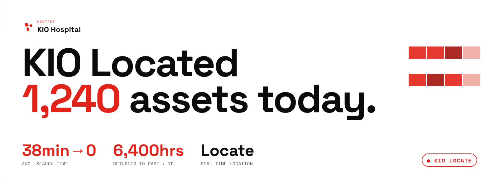
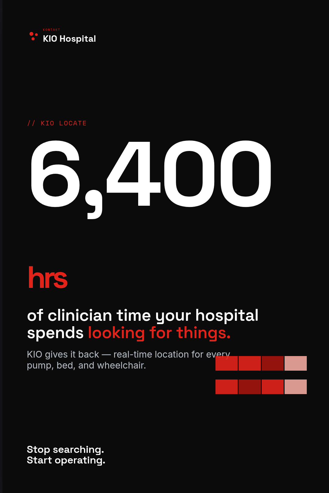
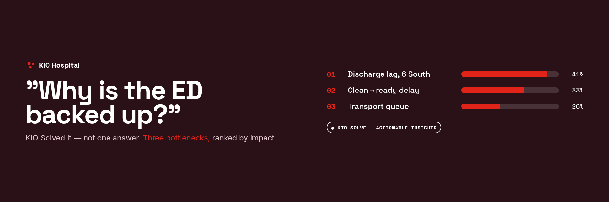
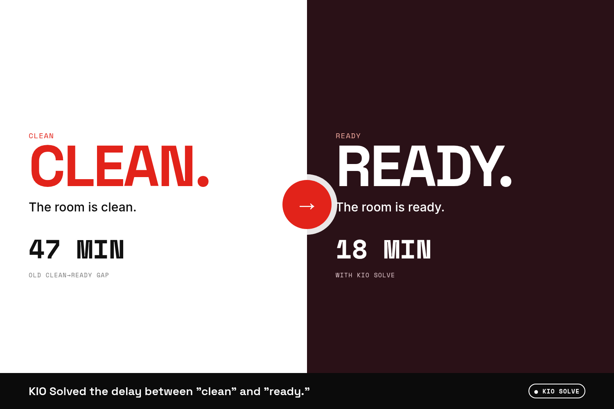
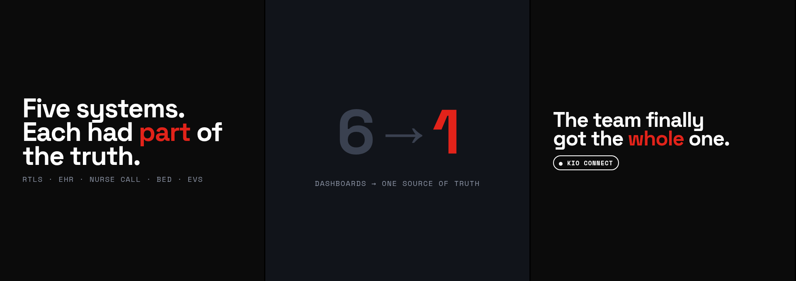
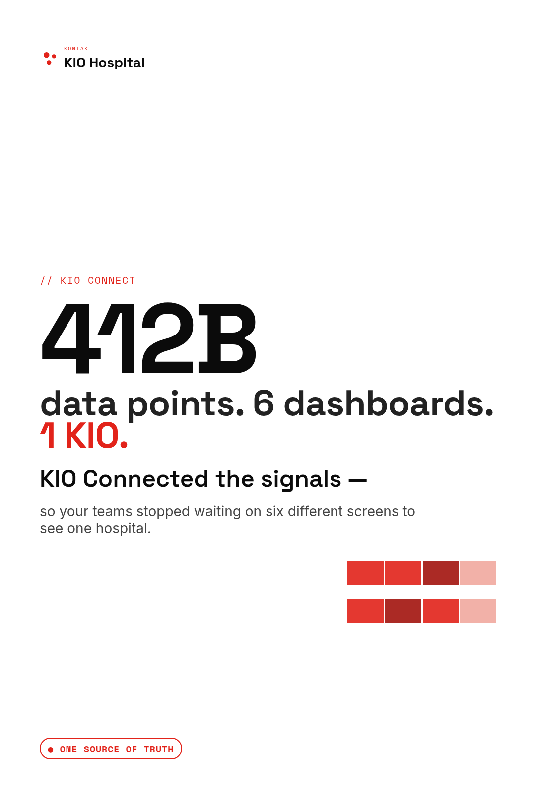
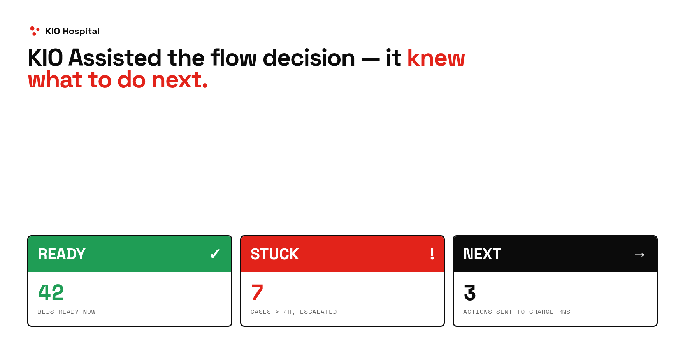
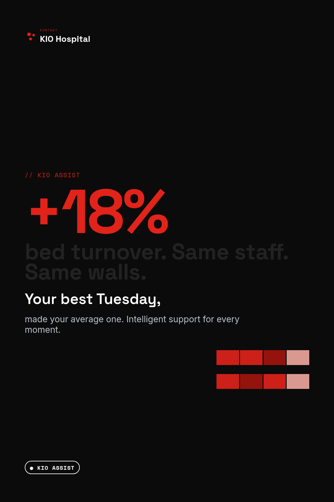
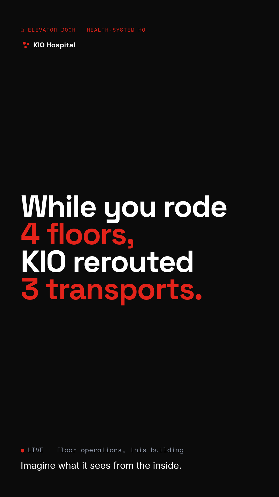
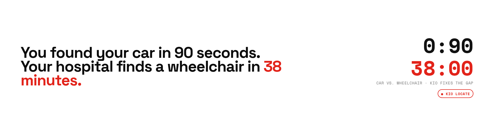
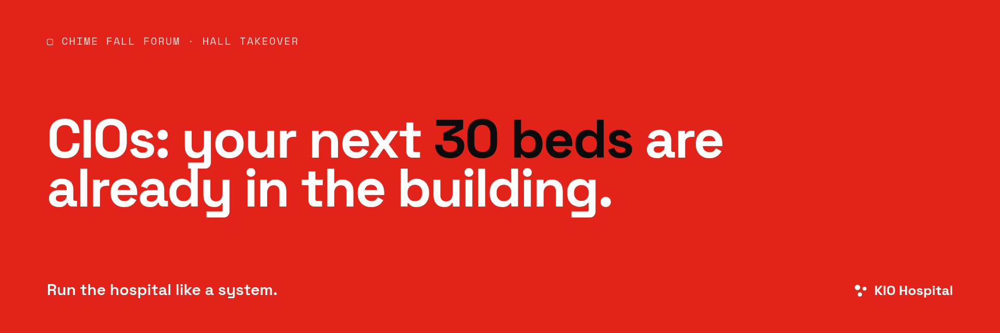